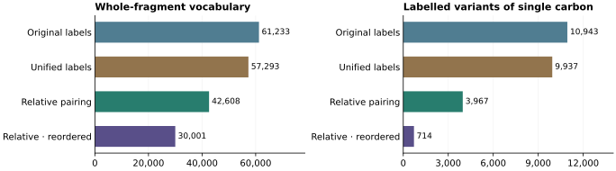
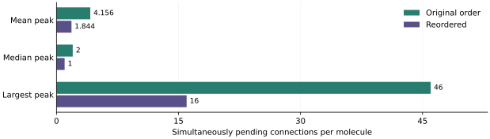
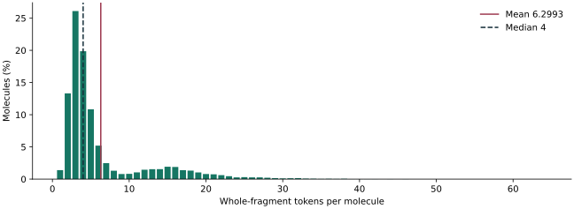

Pending before
Pending after
Decoded SAFE through this step
Complete decoded SAFE
On 50,000 ChEMBL 35 molecules, reordering the same whole fragments reduces the relative-pairing dictionary from 42,608 to 30,001 entries. Both orders average 6.2993 tokens per molecule and recover all 50,000 structures.
| Connection scheme | Vocabulary entries | Mean tokens | Median tokens | Strict molecule recovery | Exact original SAFE text |
|---|
The cohort contains the first 50,000 valid, unique molecules with fewer than 100 lexical items in their original SMILES. NPE was trained on this cohort with 3,000 node entries. Each final SAFE fragment occupies one model position. Dots are inserted during decoding.
Original labels retain the complete fragment text. Unified labels assign the smallest available positive label to each cross-fragment opening, reusing released labels and reserving all internal ring labels. Relative pairing records openings and the one-based rank of the pending site to close. In the original order, unified labels and relative pairing decode to the same renumbered SAFE string. Reordering can change label assignments and fragment order.
45,402 molecules preserved the NPE partition exactly, 4,592 had boundaries adjusted by SAFE, and 6 fell back to whole-molecule SMILES. All four dictionaries were built on this cohort; coverage on unseen molecules was not measured. Saved token IDs and their dictionary were decoded without a per-molecule edge table. Strict recovery compares canonical isomeric SMILES.
The four whole-fragment encodings share one row. We compared their stored ID sequences for each of the 50,000 molecules and found identical lengths in every case. Each encoding assigns one ID per fragment, for 314,965 tokens in total. BRICS + SAFE counts lexical tokens, including connection symbols. DemoDiff counts NPE node IDs and stores connectivity in a separate edge table.


Click a token in either sequence to highlight the same fragment in both drawings. F1, F2 and subsequent labels follow the original SAFE string. Gold marks the selected atoms. Red marks a connection closed at that step. Each sequence uses its own dictionary.
Original SAFE
Both ID sequences recover the following canonical isomeric SMILES. Paste it into SMILES Explorer to inspect the structure.
The encoder builds candidate orders from several starting fragments. When possible, it chooses a fragment that closes an open connection. It scores complete orders first by the largest pending list, then by accumulated list lengths and finally by the sum of closing ranks. It keeps an improved order after checking that the decoded molecule has the original canonical isomeric SMILES. The decoder needs only the ordered token IDs and their shared dictionary.
A cross-fragment bond is pending from the moment the decoder reads its first endpoint until it reads the second. The peak for one molecule is the largest number pending at once, counting every opening and closure within each token.
For , the list sizes after successive connection events are in the original order and after reordering.
The bars summarize one peak per molecule across all 50,000 molecules. The mean falls from 4.069 to 1.818, the median from 2 to 1, and the largest observed peak from 46 to 17. Reordering lowered the peak for 37,535 molecules.

Each of the 4,817 distinct fragment backbones observed with a cross-fragment label contributes once. Backbones are grouped from final SAFE fragments, including adjusted boundaries. Counts include only variants with an external connection.

| Scheme | Mean variants per motif | Median | Maximum |
|---|
All four schemes use the same fragment boundaries. Their token lengths match for every molecule: 314,965 tokens in total.

Choose a molecule, then click a token. Gold marks the atoms in that token. A red line marks a cross-fragment bond completed in the selected step. Atom indices follow SAFE order, starting at 0.
Original SAFE
{+} opens a connection at the current atom. {-2} closes the second site in the current pending list and removes it. Within one token, actions run from left to right. Bond symbols such as = keep their usual meaning; ring labels that pair within the fragment stay literal. The molecular drawings illustrate the replay; decoding the SAFE sequence uses only token IDs and dictionary entries.